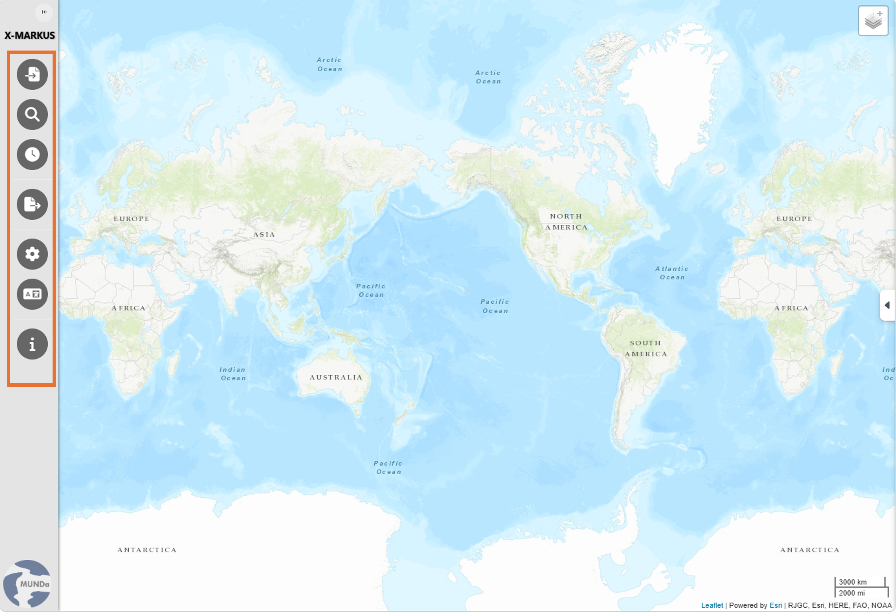

| MUNDa Instructions |
MUNDa is a spatial analysis platform for data annotated in ENTMARKUS, COMARKUS and IMMARKUS. It imports XML files exported from X-MARKUS, allowing the data to be displayed and explored in an interactive GIS environment, complete with various topographic and historical administrative layers, that preserves their context and also allows for AI-assisted analysis of the spatial data.
MUNDa also allows for the visualization of spatial data in TSV and similar formats.
For more information, source code, and citation details, visit the information section in MUNDa.
When MUNDa opens in the browser, a map appears in the main content area, displaying imported data. The interface provides two main sets of controls:

Use the icons on the left menu bar to access the following features:
Import Data: Upload a file in XML, TSV, JSON or Excel format, or paste tabular data for spatial exploration. Once the data is imported, a filtering and navigation panel appears on the right. For more information, see Importing Data.
Table Search: Search place names in imported records or the OpenStreetMap database, or filter individual table columns by keyword. For more information, see Table Search in Searching and Filtering Data.
Time Range: Filter records by a selected period. The time range is based on event time for event datasets, or on the publication time recorded in the metadata if event time is unavailable or the dataset is not event-based. You can download the time-filtered records or add them directly to the map as a new layer. For more information, see Searching and Filtering Data.
Export: Export the full imported dataset or a filtered subset in TSV, JSON, or Excel format. You can also export the map as a PNG image. For more information, see Exporting Data.
Map Marker Settings: Adjust the appearance of markers for imported records and filtered results.
Change Language: Select the interface language. Available languages are English, Traditional Chinese, Simplified Chinese, Korean, and Japanese.
Information: View project information and citation details.
The map selection menu allows you to manage the base map and map overlays, independently of the data layers created from filtered records.
Select a base map from the available options. Only one base map can be selected at a time.
Select or clear the checkboxes to show or hide historical map overlays, and adjust their contrast, brightness, saturation and opacity. Multiple overlays can be selected at the same time.
MUNDa provides access to additional map overlays through WMTS (Web Map Tile Services) supplied by the Chinese Civilization in Time and Space (CCTS) system.
The selected overlays appear automatically in the current view. Use the overlay adjustment panel to adjust their contrast, brightness, saturation and opacity, or remove them.
Prepare an XML file exported from X-MARKUS.
[Data preparation instructions]
For coordinate-based tables, prepare the fields below. Coordinates use WGS84 decimal degrees.
| Field | Description |
|---|---|
id
|
Record identifier. |
name
|
Record name. |
x
|
Longitude. |
y
|
Latitude. |
date
|
Optional date. |
text
|
Optional descriptive or source text. |
[Coordinate selection and final import instructions]
Open Import Data to load a supported file or paste tab-separated data from a spreadsheet into the input area.
[File import instructions]
[Map navigation instructions]
[Note the clicking on data points would not show multiple records in the same location, but only the first record. The user can use the search function to find all records in that location.]
↑ Back to section topAfter conducting your filter search, multiple records mapping to the same location will spread as separate markers on the map. Click on a marker to view its annotation information.
Open Settings to adjust marker color, symbol, and size.
Separate settings are available for search-result markers.
↑ Back to section top